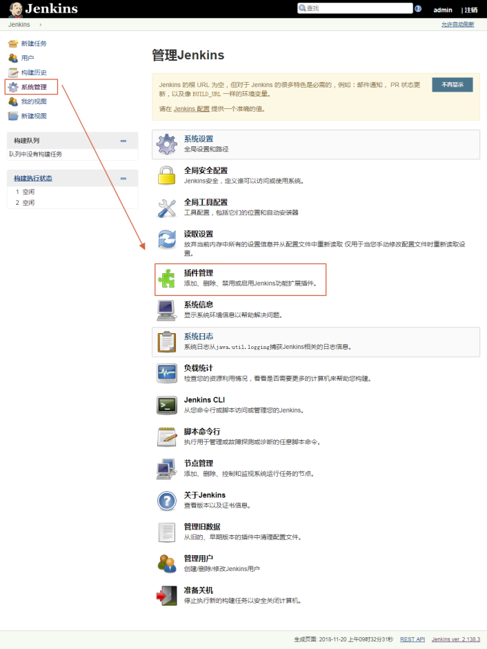

TreeviewCopyright © aleen42 all right reserved, powered by aleen42
windows环境下安装
下载

安装


linux环境下安装
ToDo
使用
修改用密码


安装插件
源代码插件（SVN）



jenkins插件下载镜像加速
修改C:\windows\system32\drivers\etc\hosts文件
127.0.0.1 updates.jenkins-ci.org

修改Nginx代理设置
location /download/plugins
{
proxy_next_upstream http_502 http_504 error timeout invalid_header;
proxy_set_header Host mirrors.tuna.tsinghua.edu.cn;
proxy_set_header X-Real-IP $remote_addr;
proxy_set_header X-Forwarded-For $proxy_add_x_forwarded_for;
rewrite /download/plugins(.*) /jenkins/plugins/$1 break;
proxy_pass https://mirrors.tuna.tsinghua.edu.cn;
}
问题
代理


SVN配置
C:\Windows\SysWOW64\config\systemprofile\AppData\Roaming\Subversion

C:\Users\Administrator\AppData\Roaming\Subversion